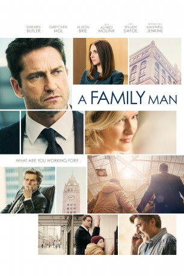
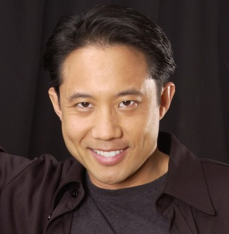
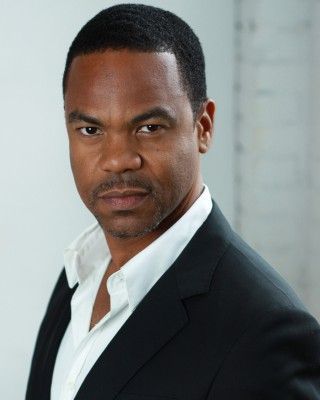

#7382 Das Glück des Augenblicks
Alternativ: A Family Man
 
 IMDB-Wertung: 6.4 / 10
IMDB-Wertung: 6.4 / 10  Metascore: 0
Metascore: 0 
As the boss (Willem Dafoe) of a Chicago-based headhunter, Dane Jensen (Gerard Butler), who works at the Blackridge Recruiting agency arranging jobs for engineers, prepares to retire, Jensen vies to achieve his longtime goal of taking over the company going head-to-head with his ambitious rival, Lynn Vogel (Alison Brie). However, Dane's 10-year-old son, Ryan (Max Jenkins), is suddenly diagnosed with cancer and his professional priorities at work and personal priorities at home begin to clash with one another.
Jahr: 2016
Dauer: 110 Minuten
FSK: 12
Land: Kanada Studio: Film & TV HouseTonspuren: DTS - ,
Untertitel: Deutsch,
Auflösung: 1080p (1920x808) Größe: 4259 MB
Genre: Drama
Regisseur: Mark Williams
Drehbuch: Bill Dubuque
Soundtrack:
Darsteller:
 Alison Brie als Lynn Vogel
Alison Brie als Lynn Vogel Gerard Butler als Dane Jensen
Gerard Butler als Dane Jensen Gretchen Mol als Elise Jensen
Gretchen Mol als Elise Jensen Willem Dafoe als Ed Blackridge
Willem Dafoe als Ed Blackridge Dustin Milligan als Sumner
Dustin Milligan als Sumner- Kathleen Munroe als Toni
 Alfred Molina als Lou Wheeler
Alfred Molina als Lou Wheeler- Stephen Bogaert als HR Manager
 Anupam Kher als Dr. Savraj Singh
Anupam Kher als Dr. Savraj Singh- Julia Butters als Lauren Jensen
 Mimi Kuzyk als Bernadine
Mimi Kuzyk als Bernadine- Max Jenkins als Ryan Jensen
- Romaine Waite als Recruiter #2
 Cyndy Day als Blackridge Secretary
Cyndy Day als Blackridge Secretary- Samuel Faraci als Kid #3
- Birgitte Solem als Sister-in-law
- Sierra Wooldridge als Ana
- Dwain Murphy als Antoine
-  Russell Yuen als Recruiter #1
- Jesse Griffiths als Recruiter #5
-  Craig Thomas als Man 40's
- Mary Krohnert als Sister-In-Law #2
- Sadie Munroe als Kid 1
- Brittany Anne Woodford als Melody
- Jimi Shlag als Recruiter #4
- Cyrus Aazam als Recruiter
- Rong Fu als Night Nurse #1
- Jess Berry als Dottie
- Monika Schurmann als Night Nurse #2
- Ethan MacIver-Wright als Nathan Jensen
- Dan Wilson als Home Tour Guide
- Jaiden Hidalgo als Tourist Son
- Damiãn Garth Brown als Recruiter , uncredited
 Mark Quigley als Recruiter , uncredited
Mark Quigley als Recruiter , uncredited- Elizabeth Reiners als Upscale Pedestrian , uncredited
- Nicki Burke als Women 30's
- Scott Edgecombe als Recruiter #3
- Matthew Mease als Recruiter
- Shawn Meunier als 20s Something Kid
- Danny Deakin als Elise's Brother 1
- Kim Horsman als Mrs.Jensen Dane's Mother
- Xavier Armanno als Executive
- Jonathan Emerson Kohler als Night Doc
Datei: X:\2016(G-M)\Glück des Augenblicks, Das (2016, FSK12, 1920x808).mkv seit 08.11.2017
Festplatte: HD 2016(A-Z)
 Es gibt insgesamt 164 Filme in der Gruppe '2016(G-M)'
Es gibt insgesamt 164 Filme in der Gruppe '2016(G-M)'